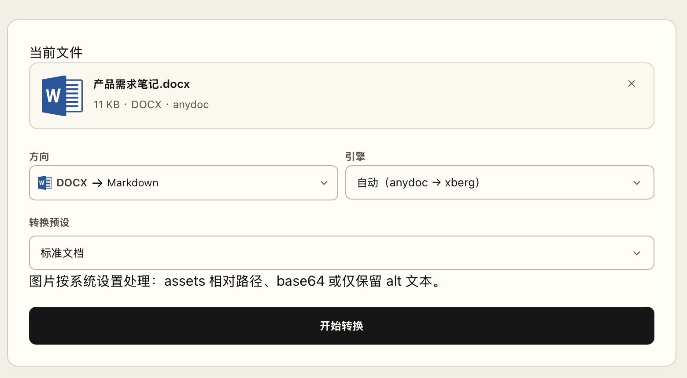
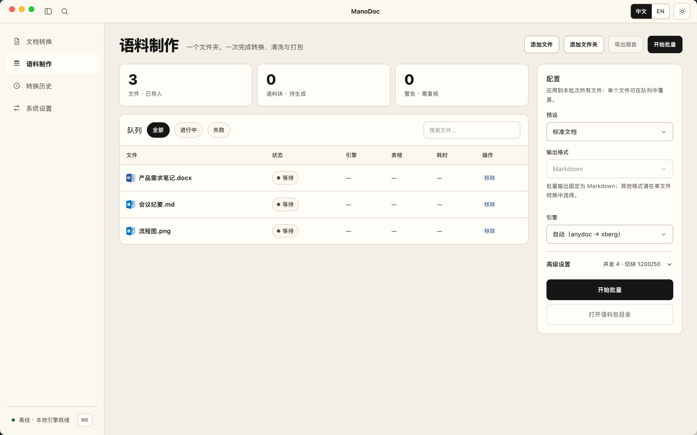
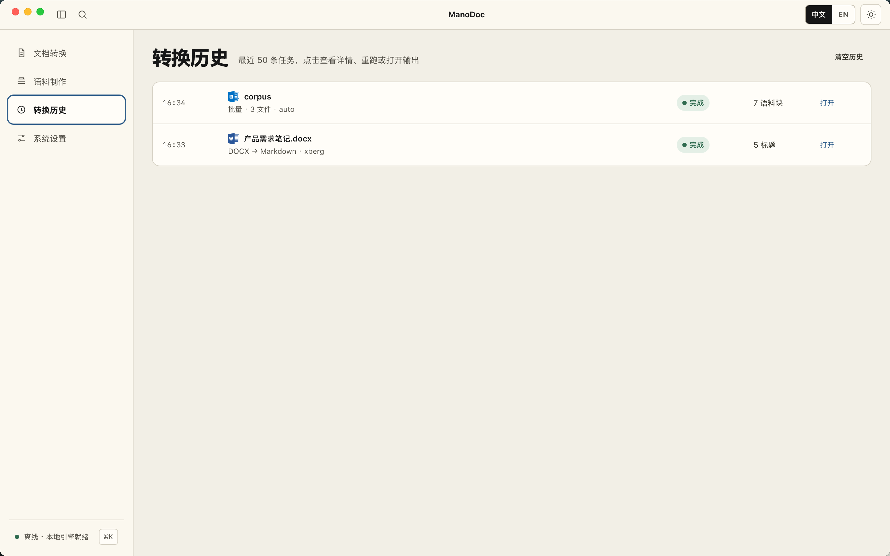

多格式转换
DOCX、XLSX、PPTX、RTF、EPUB、CSV、文本型 PDF、Markdown、HTML、PNG / JPEG → Markdown；Markdown → Word / PDF / HTML / EPUB。
anydoc · xberg · pandoc · Typst本地优先的文档转换与语料制作工作台。把 Word、PDF、Excel、图片整理成干净的 Markdown，再清洗、切块、打包成可检索的知识库。

不需要在多个在线工具之间搬运文件。选择输入，ManoDoc 按内容识别格式、选择引擎，并把结果写入你指定的目录。
DOCX、XLSX、PPTX、RTF、EPUB、CSV、文本型 PDF、Markdown、HTML、PNG / JPEG → Markdown；Markdown → Word / PDF / HTML / EPUB。
anydoc · xberg · pandoc · Typst自动识别无文本页与图片输入，使用 xberg + PaddleOCR 识别中文内容；模型按需安装，转换时强制离线。
OCR · 模型显式安装批量队列、清洗规则、按标题切块与元数据，输出厂商中立的镜像 Markdown、chunks.jsonl 与 manifest.json。
批量 · 可追溯转换、语料与历史共用同一套任务状态；标题栏始终显示当前进度，切换页面不会丢失任务。


首发支持 macOS Apple Silicon。安装包包含转换所需的 sidecar，无需单独安装 pandoc 或 Typst。
打开 DMG，把 ManoDoc 拖入「应用程序」文件夹，然后从启动台打开。
若被 Gatekeeper 拦截，右键应用选择「打开」。系统要求 macOS 12 或更高版本。
从单文件转换开始，或直接把一个文件夹交给语料制作。
拖入或选择文件，确认方向与引擎后开始转换。PDF 含无文本页时会先弹出预检，列出页码与占比，可选择跳过、使用 OCR 或改为失败。
chunks.jsonl、manifest.json 与批次报告。历史保留最近 50 条任务（可在设置中调整），只保存路径、参数与结果摘要，不复制文件。点击任务可打开详情、打开输出或按原参数重跑。
这些限制来自格式本身或分发方式；应用会在对应位置给出提示，不静默失败。
扫描件需要 OCR 模型。在「系统设置 → 引擎」安装 PP-OCRv6 small（约 31 MB）；安装前显示来源与哈希，转换期间强制离线。
PDF → Word 保真有限。由 PDF → Markdown → DOCX 生成，目录与图片可能被简化；结果会附带质量提示，不内置 pdf2docx。
跳过页不写入输出。预检选择「跳过并继续」后，无文本页会从输出与语料包中移除，并在警告和批量报告中记录页码。
pandoc 为 GPL-2.0 程序。以独立 sidecar 进程调用，不静态链接；源码获取方式见应用「关于」页与 pandoc.org。
ManoDoc 以 MIT 协议开源。第三方组件保留各自协议与版权。
| 组件 | 协议 | 用途 |
|---|---|---|
| anydoc | MIT | Office / 文本型 PDF 解析 |
| xberg | MIT | 第二内核、OCR、表格识别 |
| PaddleOCR | Apache-2.0 | 中文 OCR 模型 |
| Typst | Apache-2.0 | PDF 排版编译 |
| pandoc | GPL-2.0 | Markdown 与文档格式导出（独立进程） |
公开发布记录。内部开发变更不在此列出。